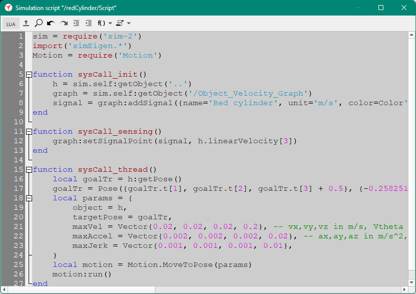

|
Script editorThe script editor allows editing simulation- and customization scripts in CoppeliaSim. It is opened by double-clicking a script object in the scene hierarchy.  [Script editor] An external script editor can also be specified by editing usrset.txt and restarting CoppeliaSim. |